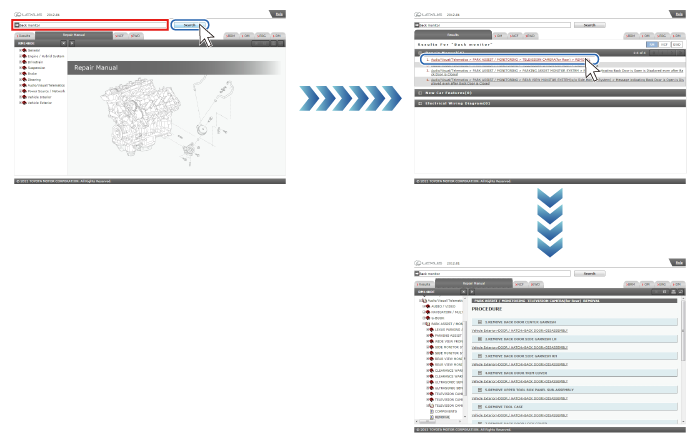
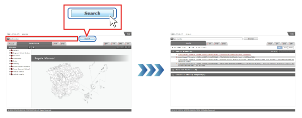
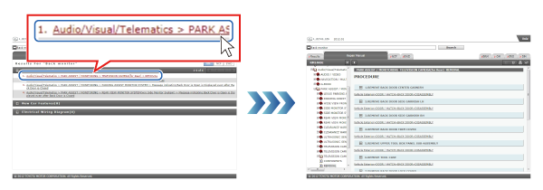
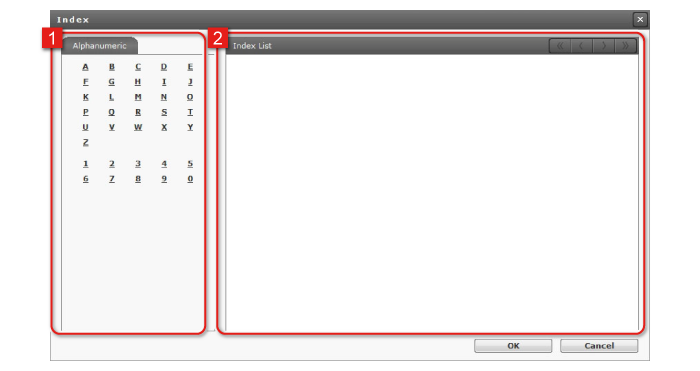
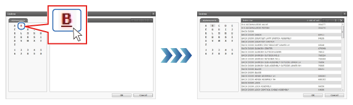
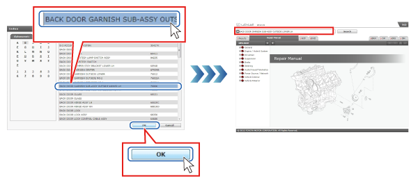
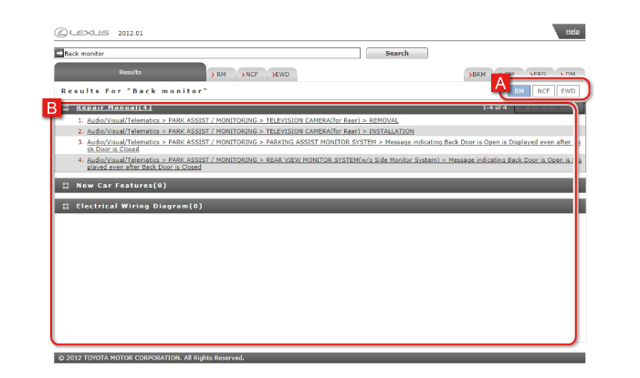

Search Manuals
Overview
Details contained in collected manuals can be searched using part names and system names etc. as keywords.
The input support function can be used to select alphanumeric keywords from the index for searches.
Search results are listed in the Results (search results) tab. Select the item you want to check in the search results list, to display the corresponding content.For details, see How to Read Search Results.
Searches
It is simple to open manual content from the search results for a keyword.

Input Keywords
 |
Input the keyword and click on Search.
Search results are listed.

- The following symbols cannot be used for searches: " * ", " ? ", " ¥ ", ~ ", " = ", and " ^ "
- Search only covers Repair Manuals, New Car Features, and Electrical Wiring Diagrams.
|
 |
Click on the link for the item you want to check.
Relevant contents are displayed.  |
Input support function
Index
Alphanumeric keywords can be selected from the Index.

| 1 |
Alphanumeric tab
Alphabetical and numerical index characters are displayed. |
| 2 |
Index List
The list corresponding to the index character selected on the alphanumeric tab is displayed. |
|
Click on the index character.
The Index List is displayed.
 |
|
Select a keyword from the Index List and click on OK.
The keyword is input to the Keyword input field.  |
How to Read Search Results
Search results are displayed in the Results (search results) tab.
Click on the link for the item you want to check, to display the corresponding content.

| A |
Search results
The number of search results in each manual and the search result items are displayed.
Items are displayed in the sequence categories, sections, titles, contents. |
| B |
Manual label
This displays whether there is a search result in each manual.
It is displayed in blue if there is one or more search hits, and in white if there are no hits. |